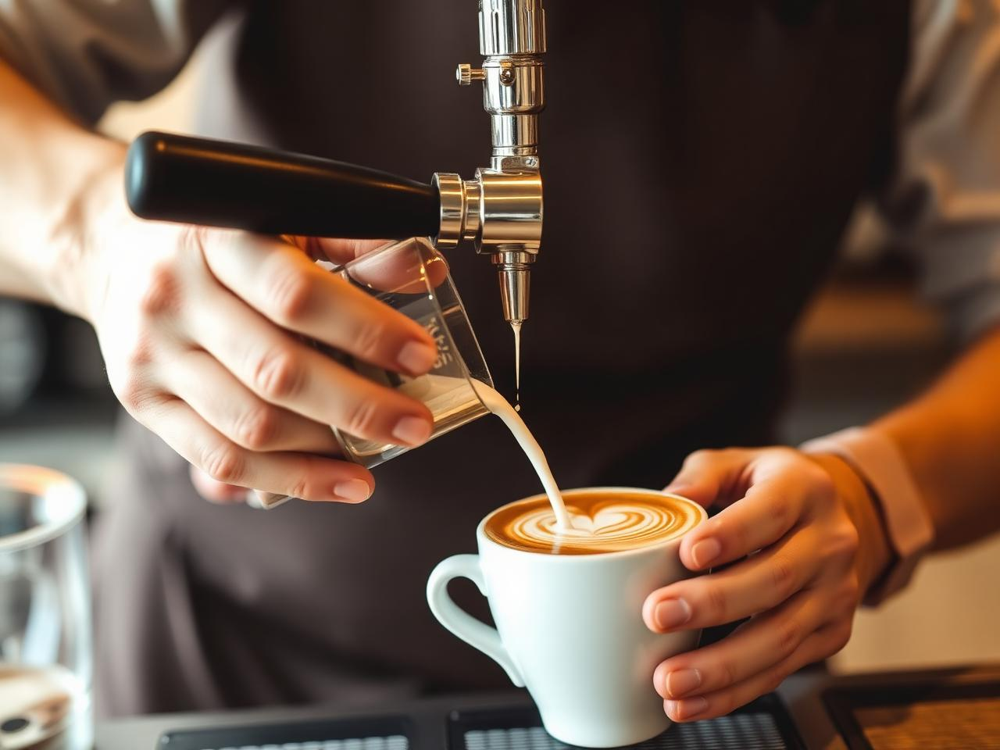

Our story
A little café with big-hearted intentions.

Maple & Bean started in 2014 as a tiny coffee window run by two friends who wanted a friendlier place to work in the morning. A decade later, we're still on the same corner — only now there's room to sit.
We roast in small batches, bake in-house, and know most of our regulars by name and order. We aren't trying to be fancy. We're just trying to make the kind of café we'd want to walk into.
Whether you're studying for an exam, catching up with a friend, or just buying a coffee on the way to work, we're glad you stopped by.
Hospitality first
Every guest, every visit. Warm welcomes are the house rule.
Sourced with care
Local farmers, fair-trade beans, real ingredients — always.
A neighborhood spot
Open mic Thursdays, tip jars for local causes, dogs welcome.